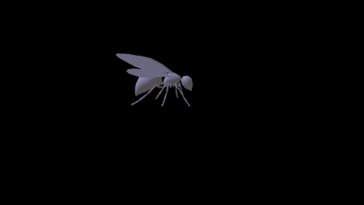

Skeleton, Skinning, and Keyframe Animation
C++
OpenGL
This project is a culmination of the first three assignments for UCSD's Computer Animation class. It
involved parsing .skel, .skin, and .anim files to render a skinned and animated skeleton.

Animation of skinned wasp
Skeleton
Project Rubric and Directions
Goals for this Project:
- Parse the data from a .skel file.
- Use forward kinematics to calculate the world space matrices for the joints.
- Render the "bones" of the skeleton using a box/rectangular prism.
Mouse Functionality:
- Hold the left mouse button and move the cursor left and right to rotate the camera around the center of the world.
- Hold the right mouse button and move the cursor to change the distance between the camera and the origin.
Skinning
Project Rubric and Directions
Goals for this Project:
- Parse the data from a .skin file and attach the skin to the corresponding skeleton (from a .skel file).
- Render the model with two different colored lights.
- Allow the DOF values to be adjusted.
Keyboard Key Functions:
- a: Go to the previous DOF (z → y → x)
- d: Go to the next DOF (x → y → z)
- j: Go to the previous joint
- k: Go to the next joint
- s: Decrease the value of the current DOF
- w: Increase the value of the current DOF
Mouse Functionality:
- Hold the left mouse button and move the cursor left or right to rotate the camera around the center of the world.
- Hold the right mouse button and move the cursor left or right to change the distance between the camera and the origin.
Keyframe Animation
Project Rubric and Directions
Goals for this Project:
- Parse the data from a .anim file.
- Calculate the DOF values for all joints based on the tangent values and modes in each keyframe.
- Play the animation on the corresponding skinned character.
Mouse Functionality:
- Hold the left mouse button and move the cursor left or right to rotate the camera around the center of the world.
- Hold the right mouse button and move the cursor left or right to change the distance between the camera and the origin.